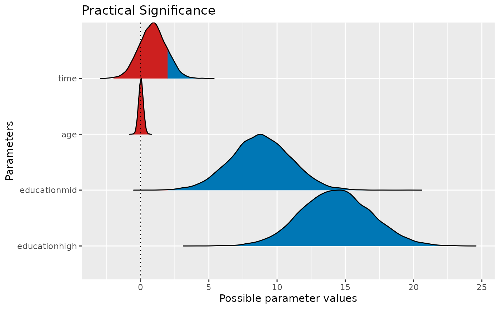

Compute the probability of Practical Significance (ps), which can be conceptualized as a unidirectional equivalence test. It returns the probability that an effect is above a given threshold corresponding to a negligible effect in the median's direction, considering a parameter's full confidence interval. In other words, it returns the probability of a clear direction of an effect, which is larger than the smallest effect size of interest (e.g., a minimal important difference). Its theoretical range is from zero to one, but the ps is typically larger than 0.5 (to indicate practical significance).
In comparison the the equivalence_test() function, where the SGPV
(second generation p-value) describes the proportion of the full confidence
interval that is inside the ROPE, the value returned by p_significance()
describes the larger proportion of the full confidence interval that is
outside the ROPE. This makes p_significance() comparable to
bayestestR::p_direction(), however, while p_direction() compares to a
point-null by default, p_significance() compares to a range-null.
Usage
# S3 method for class 'lm'
p_significance(
x,
threshold = "default",
ci = 0.95,
vcov = NULL,
vcov_args = NULL,
verbose = TRUE,
...
)Arguments
- x
A statistical model.
- threshold
The threshold value that separates significant from negligible effect, which can have following possible values:
"default", in which case the range is set to0.1if input is a vector, and based onrope_range()if a (Bayesian) model is provided.a single numeric value (e.g., 0.1), which is used as range around zero (i.e. the threshold range is set to -0.1 and 0.1, i.e. reflects a symmetric interval)
a numeric vector of length two (e.g.,
c(-0.2, 0.1)), useful for asymmetric intervalsa list of numeric vectors, where each vector corresponds to a parameter
a list of named numeric vectors, where names correspond to parameter names. In this case, all parameters that have no matching name in
thresholdwill be set to"default".
- ci
Confidence Interval (CI) level. Default to
0.95(95%).- vcov
Variance-covariance matrix used to compute uncertainty estimates (e.g., for robust standard errors). This argument accepts a covariance matrix, a function which returns a covariance matrix, or a string which identifies the function to be used to compute the covariance matrix.
A covariance matrix
A function which returns a covariance matrix (e.g.,
stats::vcov())A string which indicates the kind of uncertainty estimates to return.
Heteroskedasticity-consistent:
"HC","HC0","HC1","HC2","HC3","HC4","HC4m","HC5". See?sandwich::vcovHCCluster-robust:
"CR","CR0","CR1","CR1p","CR1S","CR2","CR3". See?clubSandwich::vcovCRBootstrap:
"BS","xy","residual","wild","mammen","fractional","jackknife","norm","webb". See?sandwich::vcovBSOther
sandwichpackage functions:"HAC","PC","CL","OPG","PL".
- vcov_args
List of arguments to be passed to the function identified by the
vcovargument. This function is typically supplied by the sandwich or clubSandwich packages. Please refer to their documentation (e.g.,?sandwich::vcovHAC) to see the list of available arguments. If no estimation type (argumenttype) is given, the default type for"HC"equals the default from the sandwich package; for type"CR", the default is set to"CR3".- verbose
Toggle warnings and messages.
- ...
Arguments passed to other methods.
Value
A data frame with columns for the parameter names, the confidence intervals and the values for practical significance. Higher values indicate more practical significance (upper bound is one).
Details
p_significance() returns the proportion of the full confidence
interval range (assuming a normally or t-distributed, equal-tailed interval,
based on the model) that is outside a certain range (the negligible effect,
or ROPE, see argument threshold). If there are values of the distribution
both below and above the ROPE, p_significance() returns the higher
probability of a value being outside the ROPE. Typically, this value should
be larger than 0.5 to indicate practical significance. However, if the range
of the negligible effect is rather large compared to the range of the
confidence interval, p_significance() will be less than 0.5, which
indicates no clear practical significance.
Note that the assumed interval, which is used to calculate the practical significance, is an estimation of the full interval based on the chosen confidence level. For example, if the 95% confidence interval of a coefficient ranges from -1 to 1, the underlying full (normally or t-distributed) interval approximately ranges from -1.9 to 1.9, see also following code:
# simulate full normal distribution
out <- bayestestR::distribution_normal(10000, 0, 0.5)
# range of "full" distribution
range(out)
# range of 95% CI
round(quantile(out, probs = c(0.025, 0.975)), 2)This ensures that the practical significance always refers to the general compatible parameter space of coefficients. Therefore, the full interval is similar to a Bayesian posterior distribution of an equivalent Bayesian model, see following code:
library(bayestestR)
library(brms)
m <- lm(mpg ~ gear + wt + cyl + hp, data = mtcars)
m2 <- brm(mpg ~ gear + wt + cyl + hp, data = mtcars)
# probability of significance (ps) for frequentist model
p_significance(m)
# similar to ps of Bayesian models
p_significance(m2)
# similar to ps of simulated draws / bootstrap samples
p_significance(simulate_model(m))Note
There is also a plot()-method
implemented in the see-package.
Statistical inference - how to quantify evidence
There is no standardized approach to drawing conclusions based on the available data and statistical models. A frequently chosen but also much criticized approach is to evaluate results based on their statistical significance (Amrhein et al. 2017).
A more sophisticated way would be to test whether estimated effects exceed the "smallest effect size of interest", to avoid even the smallest effects being considered relevant simply because they are statistically significant, but clinically or practically irrelevant (Lakens et al. 2018, Lakens 2024).
A rather unconventional approach, which is nevertheless advocated by various authors, is to interpret results from classical regression models either in terms of probabilities, similar to the usual approach in Bayesian statistics (Schweder 2018; Schweder and Hjort 2003; Vos 2022) or in terms of relative measure of "evidence" or "compatibility" with the data (Greenland et al. 2022; Rafi and Greenland 2020), which nevertheless comes close to a probabilistic interpretation.
A more detailed discussion of this topic is found in the documentation of
p_function().
The parameters package provides several options or functions to aid statistical inference. These are, for example:
equivalence_test(), to compute the (conditional) equivalence test for frequentist modelsp_significance(), to compute the probability of practical significance, which can be conceptualized as a unidirectional equivalence testp_function(), or consonance function, to compute p-values and compatibility (confidence) intervals for statistical modelsthe
pdargument (settingpd = TRUE) inmodel_parameters()includes a column with the probability of direction, i.e. the probability that a parameter is strictly positive or negative. SeebayestestR::p_direction()for details. If plotting is desired, thep_direction()function can be used, together withplot().the
s_valueargument (settings_value = TRUE) inmodel_parameters()replaces the p-values with their related S-values (Rafi and Greenland 2020)finally, it is possible to generate distributions of model coefficients by generating bootstrap-samples (setting
bootstrap = TRUE) or simulating draws from model coefficients usingsimulate_model(). These samples can then be treated as "posterior samples" and used in many functions from the bayestestR package.
Most of the above shown options or functions derive from methods originally
implemented for Bayesian models (Makowski et al. 2019). However, assuming
that model assumptions are met (which means, the model fits well to the data,
the correct model is chosen that reflects the data generating process
(distributional model family) etc.), it seems appropriate to interpret
results from classical frequentist models in a "Bayesian way" (more details:
documentation in p_function()).
References
Amrhein, V., Korner-Nievergelt, F., and Roth, T. (2017). The earth is flat (p > 0.05): Significance thresholds and the crisis of unreplicable research. PeerJ, 5, e3544. doi:10.7717/peerj.3544
Greenland S, Rafi Z, Matthews R, Higgs M. To Aid Scientific Inference, Emphasize Unconditional Compatibility Descriptions of Statistics. (2022) https://arxiv.org/abs/1909.08583v7 (Accessed November 10, 2022)
Lakens, D. (2024). Improving Your Statistical Inferences (Version v1.5.1). Retrieved from https://lakens.github.io/statistical_inferences/. doi:10.5281/ZENODO.6409077
Lakens, D., Scheel, A. M., and Isager, P. M. (2018). Equivalence Testing for Psychological Research: A Tutorial. Advances in Methods and Practices in Psychological Science, 1(2), 259–269. doi:10.1177/2515245918770963
Makowski, D., Ben-Shachar, M. S., Chen, S. H. A., and Lüdecke, D. (2019). Indices of Effect Existence and Significance in the Bayesian Framework. Frontiers in Psychology, 10, 2767. doi:10.3389/fpsyg.2019.02767
Rafi Z, Greenland S. Semantic and cognitive tools to aid statistical science: replace confidence and significance by compatibility and surprise. BMC Medical Research Methodology (2020) 20:244.
Schweder T. Confidence is epistemic probability for empirical science. Journal of Statistical Planning and Inference (2018) 195:116–125. doi:10.1016/j.jspi.2017.09.016
Schweder T, Hjort NL. Frequentist analogues of priors and posteriors. In Stigum, B. (ed.), Econometrics and the Philosophy of Economics: Theory Data Confrontation in Economics, pp. 285-217. Princeton University Press, Princeton, NJ, 2003
Vos P, Holbert D. Frequentist statistical inference without repeated sampling. Synthese 200, 89 (2022). doi:10.1007/s11229-022-03560-x
See also
For more details, see bayestestR::p_significance(). See also
equivalence_test(), p_function() and bayestestR::p_direction()
for functions related to checking effect existence and significance.
Examples
data(qol_cancer)
model <- lm(QoL ~ time + age + education, data = qol_cancer)
p_significance(model)
#> Practical Significance (threshold: -1.99, 1.99)
#>
#> Parameter | 95% CI | ps
#> ---------------------------------------
#> (Intercept) | [58.46, 69.28] | 100%
#> time | [-1.07, 2.85] | 13.59%
#> age | [-0.32, 0.37] | 0.00%
#> educationmid | [ 4.43, 13.09] | 99.94%
#> educationhigh | [ 9.33, 19.38] | 100%
p_significance(model, threshold = c(-0.5, 1.5))
#> Practical Significance (threshold: -0.50, 1.50)
#>
#> Parameter | 95% CI | ps
#> ---------------------------------------
#> (Intercept) | [58.46, 69.28] | 100%
#> time | [-1.07, 2.85] | 26.63%
#> age | [-0.32, 0.37] | 0.20%
#> educationmid | [ 4.43, 13.09] | 99.96%
#> educationhigh | [ 9.33, 19.38] | 100%
# based on heteroscedasticity-robust standard errors
p_significance(model, vcov = "HC3")
#> Practical Significance (threshold: -1.99, 1.99)
#>
#> Parameter | 95% CI | ps
#> ---------------------------------------
#> (Intercept) | [58.33, 69.41] | 100%
#> time | [-1.13, 2.90] | 14.24%
#> age | [-0.33, 0.38] | 0.00%
#> educationmid | [ 4.21, 13.31] | 99.87%
#> educationhigh | [ 9.37, 19.34] | 100%
if (require("see", quietly = TRUE)) {
result <- p_significance(model)
plot(result)
}
